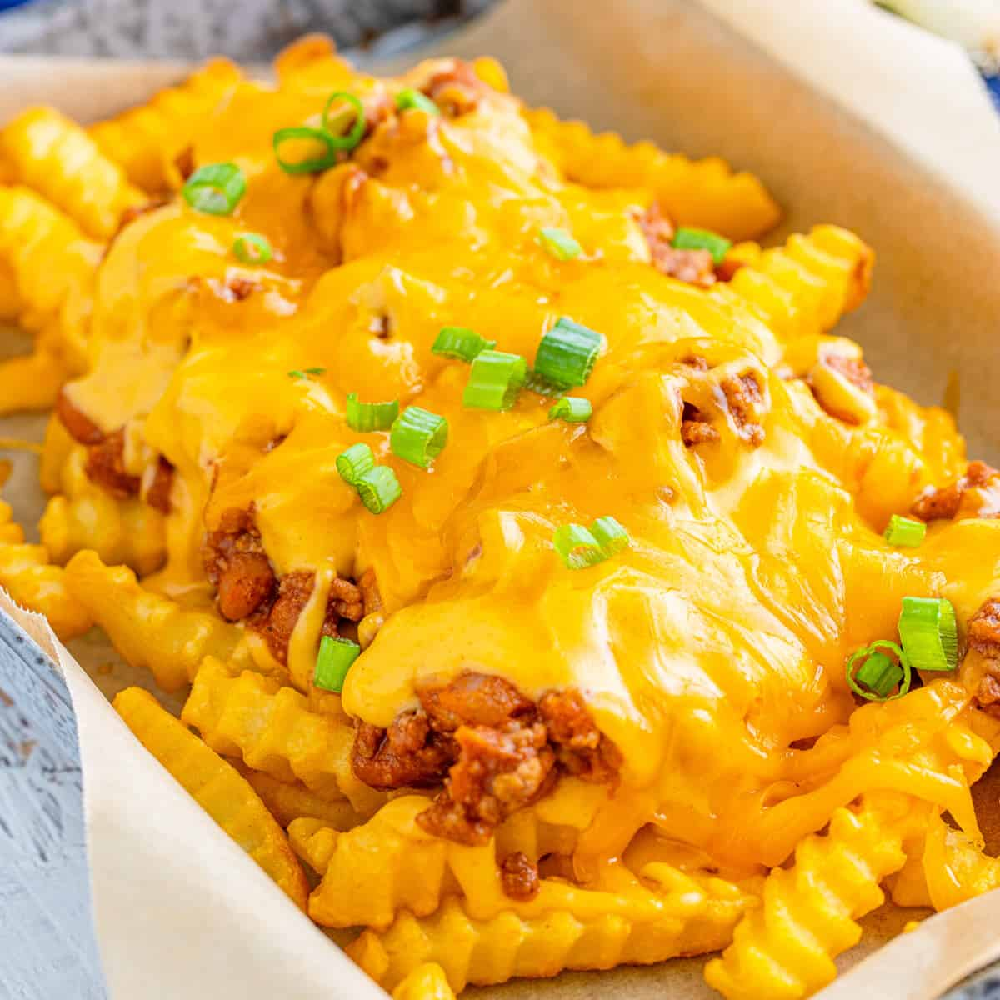

Soul-defying Cheese Fries

Easy and fast, these Cheddar cheese fries are served with bacon and dipped in ranch dressing.
A simple, tasty-delicious recipe. Came across it at lunchtime and had to make it right away! I agree with other raters that more cheese and bacon would be needed for a whole bag of fries. I used potato wedges and white cheddar cheese, and chopped green onion. My husband is a vegetarian so I used real bacon for mine and vegetarian "facon bits" on his. Both worked well and I'll make it again, adding garlic next time.
Ingredients
- 3 slices bacon
- 1 (28 ounce) package frozen French fries
- 1 cup shredded Cheddar cheese
- Ranch dressing
Steps
- Place bacon in a large skillet and cook over medium-high heat, turning occasionally, until evenly browned, about 10 minutes. Drain bacon slices on paper towels; crumble.
- Preheat oven to 400 degrees F (205 degrees C). Place a piece of aluminum foil over a baking sheet; spread fries in a single layer on baking sheet.
- Bake in preheated oven until golden brown and crisp, 15 to 20 minutes.
- Preheat broiler.
- Sprinkle fries with cheese and crumbled bacon.
- Broil until cheese is melted, 1 to 2 minutes. Serve with Ranch dressing.